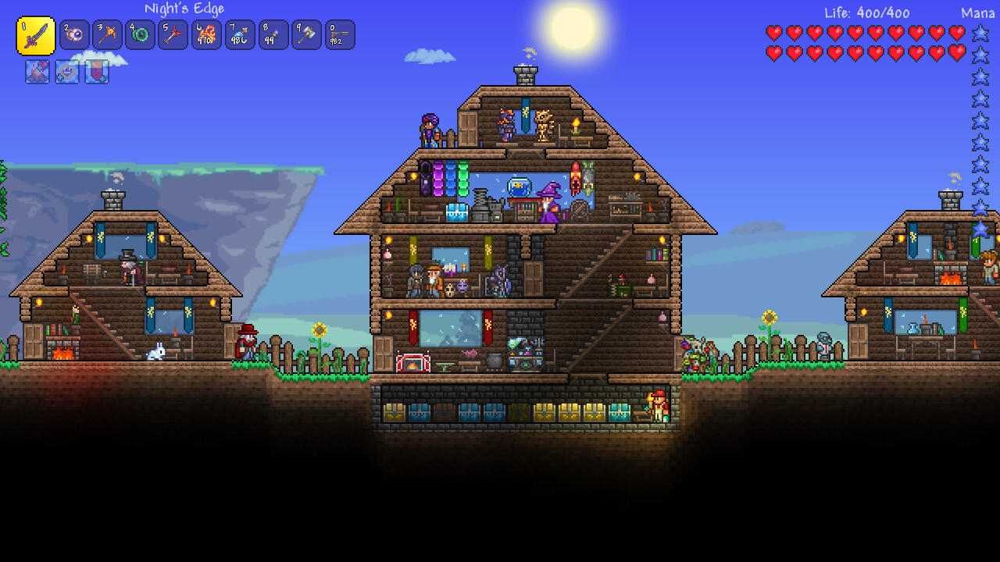

Terraria è un gioco di tipo sandbox in cui puoi esplorare, combattere e creare in un mondo generato casualmente. Puoi scavare nelle profondità delle caverne in cerca di tesori e materiali con cui fabbricare oggetti sempre più evoluti, macchinari e decorazioni. Puoi anche sfidare nemici sempre più forti per mettere alla prova le tue abilità in combattimento.

Terraria mescola elementi dei giochi'azione classici con la libertà della creatività in stile sandbox, offrendo un'esperienza di gioco unica in cui sia il viaggio che la destinazione sono completamente sotto il controllo del giocatore. L'avventura di Terraria è davvero unica come i giocatori stessi! Sei pronto per l'imponente compito di esplorare, creare e difendere un mondo tutto tuo?